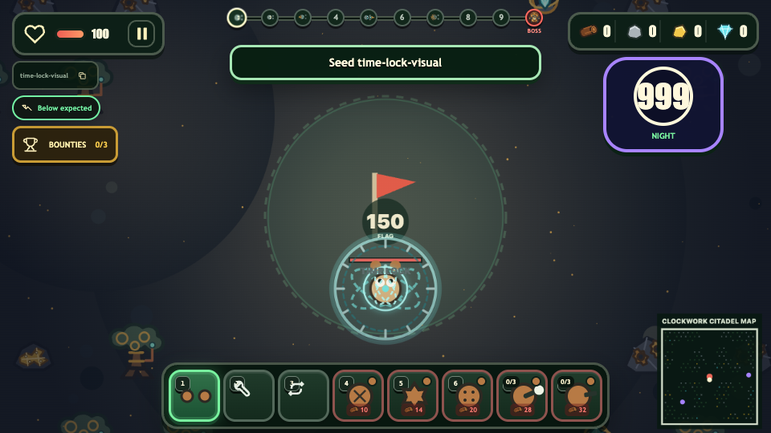
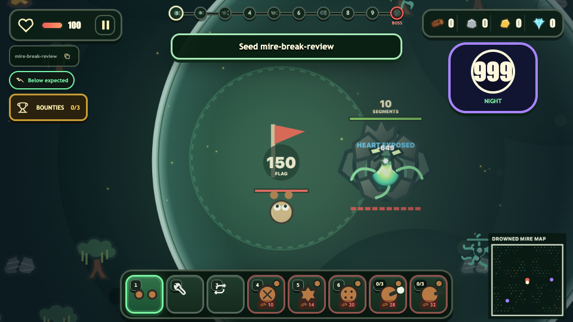

2x / 0.75x
Armored boss exposed health / armor health
Applied as one future-proof registry transform to every armored boss while preserving difficulty scaling.
Implementation review
The requested durability, projectile, aiming, chase, parasite, Mire boss, and Time Lock changes are implemented through shared deterministic systems and centralized tuning.
Applied as one future-proof registry transform to every armored boss while preserving difficulty scaling.
Comets now have 1040 px travel range, 2 s lifetime, obstacle overflight, and structure piercing.
Ordinary player pursuit times out cleanly. Explicit player-hunter enemies retain their core mechanic.
Every hit uses the shared 2 second Time Lock, with no movement, actions, aiming, turret tracking, or firing.
The shield armor is unchanged, while the exposed body now clearly supports the tank role.
Root ruptures are removed. Deterministic shared summoning now uses a bounded 18-child lifecycle cap.


Measured during continuous player movement in Drowned Mire at 960 x 540 after replacing broad per-frame work with cached and spatial paths.
| System | Implemented behavior | Evidence |
|---|---|---|
| Turret intercept | Constant-time quadratic lead with an 84% lead factor. Arrows remain ballistic after firing. | Focused math tests |
| Parasite removal | Only full resource depletion clears infection, emits CLEANSED, and blocks reinfection of the empty node. | Lifecycle regression test |
| Armor-break parasites | Released tentacles retain the flag as primary objective, attack nearby players without retargeting, and engage blocking structures. | Flag-priority tests |
| Death particles | Generic zombie death particles use each campaign biome's enemy body color instead of fixed green. | Theme source of truth |
| Time Lock audio | Application uses the existing Mire Lurker attack cue through the shared status application path. | Canonical audio preserved |
npm test: 34 files, 503 tests passed.npm run build: TypeScript and Vite production build passed.npm run visual:validate: 362 editable SVGs, 75 gameplay assets, and all reference groups validated.